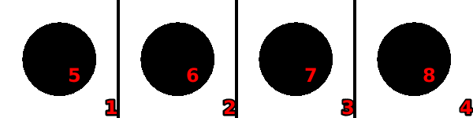
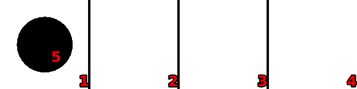

Stacking-frogs
Language: Teaching Script Entire Dialog
World states:
init-stacked-frogs.world
final-stacked-frogs.world
Primitive concepts used
Object types:
|
locations, blocks |
Colors:
|
red, blue
|
| Spatial relations: |
on, below, between |
| Functions: |
count of, less than |
Teaching Dialog (Rosie in bold)
TEACHER: The name of the puzzle is stacked-frogs.
Please setup the puzzle.
TEACHER: Load init-stacked-frogs.

Ok.
TEACHER: Ok.
Please describe the actions, goals, and failure conditions.
TEACHER: If the number of the locations between a location and a covered location is the number of the blocks that are on the covered location then you can move it onto the former location.
Please describe the meaning of 'covered' in this context.
TEACHER: If a location is below an object then it is covered.
Ok, I've learned the meaning of 'covered' for this context.
How many instances of this action are there, 6 or 4?
TEACHER: There is six.
Ok.
I've learned the action.
TEACHER: The solution has three steps.
Ok.
TEACHER: Load final-stacked-frogs.

Ok.
TEACHER: The name of the goal is three-clear.
Please setup the goal state.
TEACHER: Ok.
Please describe the goal.
TEACHER: The goal is that there are three clear locations.
Please describe the meaning of 'clear' in this context.
TEACHER: If a location is not below an object then it is clear.
Ok, I've learned the meaning of 'clear' for this context.
I've learned the goal.
TEACHER: Done.
I've learned stacked-frogs. Should I try to solve the puzzle?
TEACHER: No.
Ok.